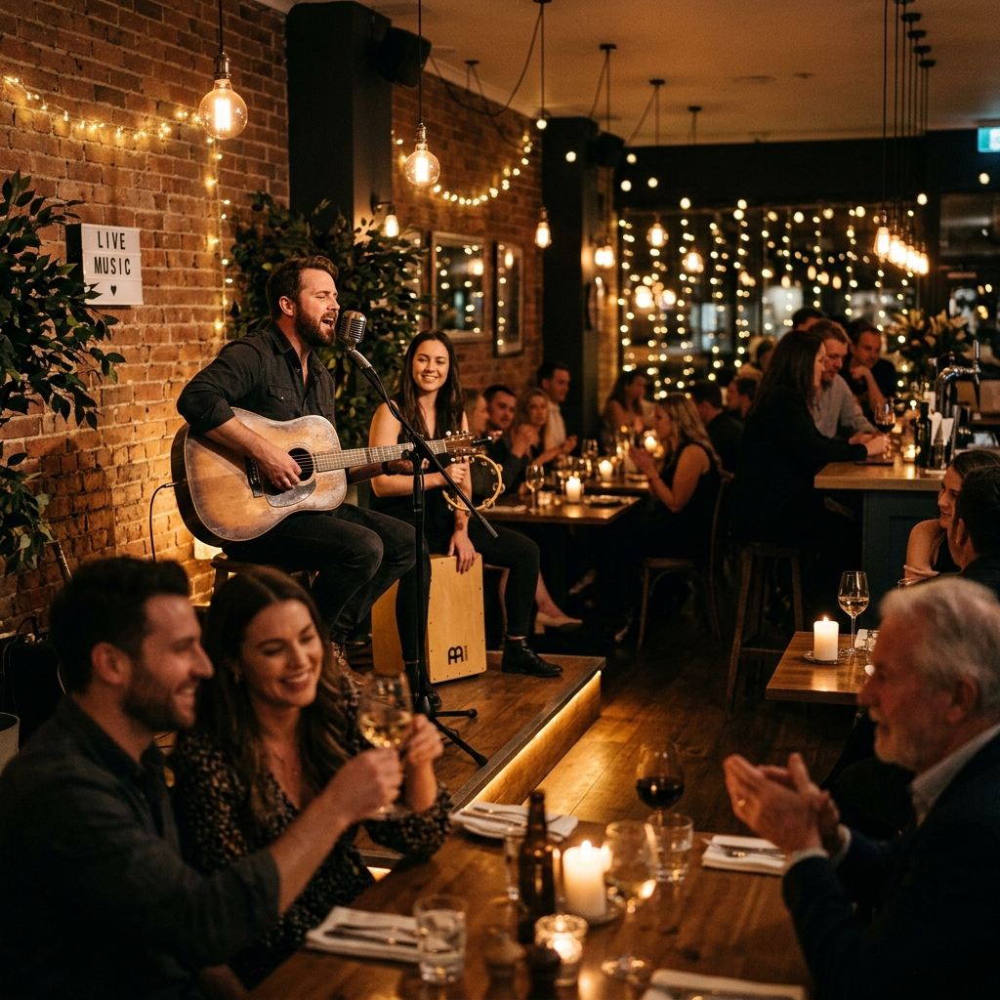

Un voyage culinaire entre le Burundi et le Togo au cœur de Kara.
Né d'une passion commune de Mariam et Dambé, un couple burundo-togolais, Afro Roots est bien plus qu'un simple restaurant. C'est un véritable coin de délice africaines situé au Togo dans la ville de Kara dans la von à droite après APRODAT sur la route du nouveau marché.
Deuxième paragraphe : Notre culture culinaire est basé sur la cuisine africaine authentique sans produits additifs ou chimique (Cube)
Vibrez au rythme de la musique et des animations dans une ambiance chaleureuse.

Venez profiter d'une soirée vibrante avec orchestre local sur scène. Musique traditionnelle et moderne.
Réservez votre placeDécouvrez notre menu dégustation exclusif avec accords de boissons locales finement choisies.
Réservez votre placeAu-delà de notre salle à manger, nous donnons vie à toutes vos envies gourmandes et festives.
Des mets raffinés et de généreuses portions pour accompagner tous vos événements professionnels et privés à l'extérieur.
Des menus complètement adaptés et sur-mesure répondant spécifiquement à vos envies particulières ou régimes.
Distribution de sandwichs frais, garnis généreusement avec des produits de qualité pour des pauses repas rapides.
Privatisation de l'espace pour vos Dîners de Gala, Anniversaires, Remises de Prix, Célébrations et Concerts Live.